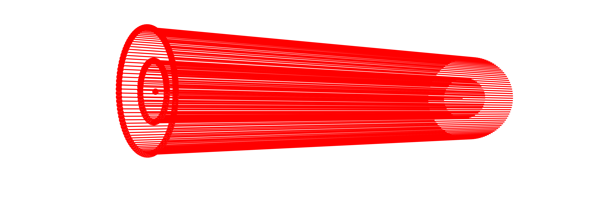
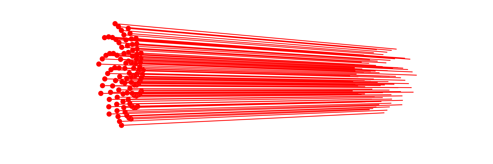
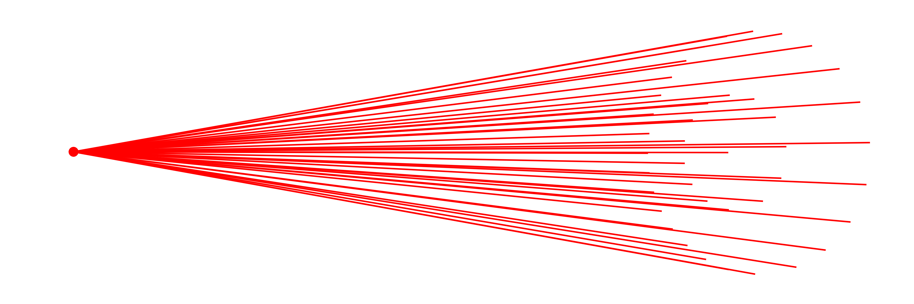

Beam groups
For convenience, the BeamletOptics.AbstractBeamGroup offers a container-like interface for groups of Beams as commonly used in other software packages. The following concrete implementations are currently provided:
julia> BeamletOptics.list_subtypes(BeamletOptics.AbstractBeamGroup);└── BeamletOptics.AbstractBeamGroup ├── AstigmaticBeamGroup{T, R} where {T<:Real, R<:BeamletOptics.AbstractRay{T}} ├── CollimatedSource{T, R} where {T<:Real, R<:BeamletOptics.AbstractRay{T}} └── PointSource{T, R} where {T<:Real, R<:BeamletOptics.AbstractRay{T}} At least 3 types have been found.
Refer to the following sections for convenience constructors to generate the sources listed above.
Collimated beam source
The collimated beam source is ideal to model light coming from a focal plane at infinity. This is useful for simulating plane wavefronts. You can define a collimated monochromatic Beam source as follows:
BeamletOptics.CollimatedSource — Method
CollimatedSource(pos, dir, diameter, λ; num_rings, num_rays)Spawns a bundle of collimated Beams at the specified position and direction. The source is modelled as a ring of concentric beam rings around the center beam. The amount of beam rings between the center ray and outer diameter can be specified via num_rings.
Arguments
The following inputs and arguments can be used to configure the CollimatedSource:
Inputs
pos: center beam starting positiondir: center beam starting directiondiameter: outer beam bundle diameter in [m]λ = 1e-6: wavelength in [m], default val. is 1000 nm
Keyword Arguments
num_rings: number of concentric beam rings, default is 10num_rays: total number of rays in the source, default is 100x num_rings

A special constructor called UniformDiscSource is available, which offers an equal-area sampling (Fibonnaci-pattern) sampling and is thus favorable in situations where the weighting of the individual beams becomes important, e.g. for calculating a point spread function using the intensity function.
BeamletOptics.UniformDiscSource — Function
UniformDiscSource(pos, dir, diameter, λ; num_rays=1_000)Generates a ray fan with equal area per ray across a circular pupil using the deterministic sunflower (Fibonacci) pattern.
This is merely a CollimatedSource constructor which uses Fibonacci sampling instead of a linear grid.
Arguments
The following inputs and arguments can be used to configure the underlying CollimatedSource:
Inputs
pos: center beam starting positiondir: center beam starting directiondiameter: outer beam bundle diameter in [m]λ = 1e-6: wavelength in [m]
Keyword Arguments
num_rays=1000: total number of rays in the source

Point beam source
The PointSource type is used to model emission from a spatially localized source that radiates Beams in a range of directions. This is commonly used to simulate conical emission patterns, such as light emerging from a fiber tip or a light source for a lens objective with a known focal distance. You can specify the origin and a propagation direction, which are then used to construct the monochromatic PointSource.
BeamletOptics.PointSource — Method
PointSource(pos, dir, θ, λ; num_rings, num_rays)Spawns a point source of Beams at the specified position and direction. The point source is modelled as a collection of concentric beam fans centered around the center beam. The amount of beam rings between the center ray and half-spread-angle θ can be specified via num_rings.
Arguments
The following inputs and arguments can be used to configure the PointSource:
Inputs
pos: center beam starting positiondir: center beam starting directionθ: half spread angle in radλ = 1e-6: wavelength in [m], default val. is 1000 nm
Keyword Arguments
num_rings: number of concentric beam rings, default is 10num_rays: total number of rays in the source, default is 100x num_rings
Below you can find an exemplary illustration of a PointSource.

Astigmatic Beam Groups
For complex sources, the package provides the AstigmaticBeamGroup container. Several constructors are available for different scenarios:
GaussianBeamletDecomposition: Tiling a large Gaussian beam into many small stable beamlets.WavefrontBeamletDecomposition: Importing an arbitrary complex field (e.g. from a phase screen or camera data).CollimatedGaussianBeamletSource: A square grid of parallel beamlets (ideal for aperture diffraction).SphericalGaussianBeamletSource: A point-like source emitting a cone of beamlets (ideal for focused/divergent beams).EllipticalGaussianBeamletSource: A point-like source emitting an elliptical cone of beamlets (ideal for sources with different fast/slow axis divergence).